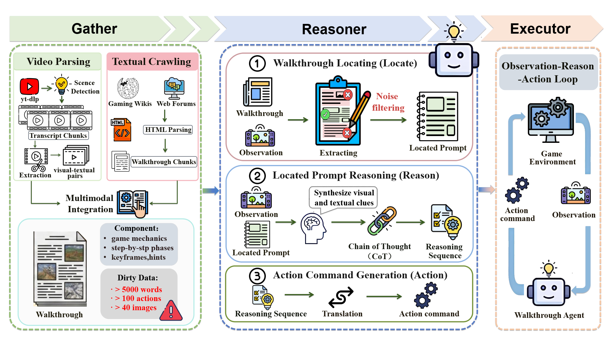

Vision-language model (VLM)-based game agents have shown considerable promise. However, although these agents generally perform well in the early stages of a game, their success rates decline substantially as task difficulty increases. As a result, enabling an agent to solve advanced levels—or even complete an entire game—remains a formidable challenge. In fact, human players often consult external walkthroughs to overcome difficult levels. For VLM-based agents, however, the multimodal, unstructured, and often redundant nature of such walkthroughs presents significant obstacles.
In this paper, we propose Walkthrough Agent, a novel framework that enables agents to adaptively identify relevant clues from redundant walkthroughs and, through reasoning, derive appropriate actions for successful execution, thereby completing more challenging game levels. Specifically, the framework consists of three modules: 1) Gather, which automatically collects raw multimodal walkthroughs; 2) Reasoner, which employs a three-stage strategy—locating, reasoning, and action—to progressively identify relevant clues and infer appropriate actions; and 3) Executor, which directly applies the generated action commands to interact with the game environment.
Extensive experiments demonstrate that our framework significantly improves success rates on the most challenging levels. Moreover, using only 1,000 samples and a three-stage training process based on the Qwen3-VL-8B model, our method achieves performance comparable to that of closed-source models.

The Walkthrough Agent Pipeline: (1) Gathering raw, cluttered multimodal walkthroughs; (2) Processing the noise via a Three-Stage Progressive Reasoner (Locating, Reasoning, action); and (3) Executing the visually-grounded action.